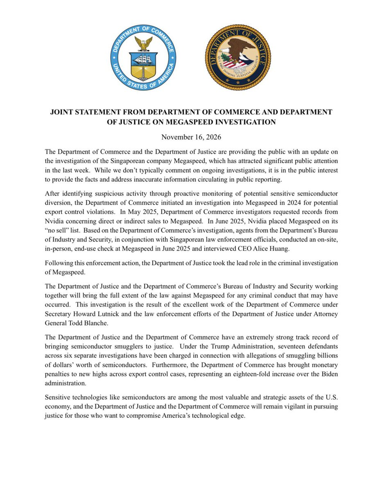
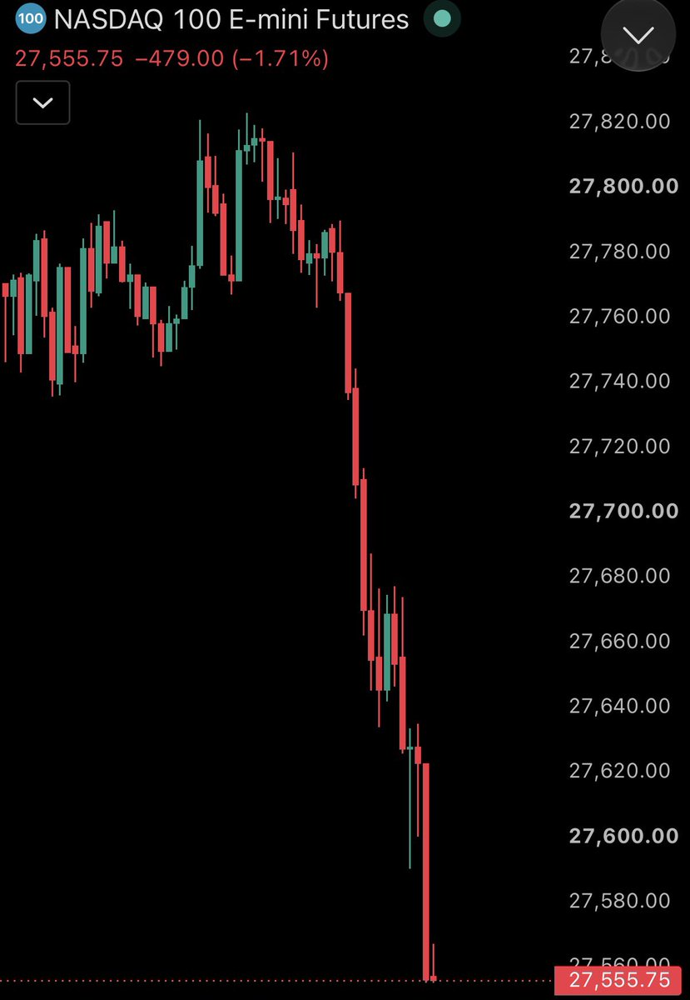
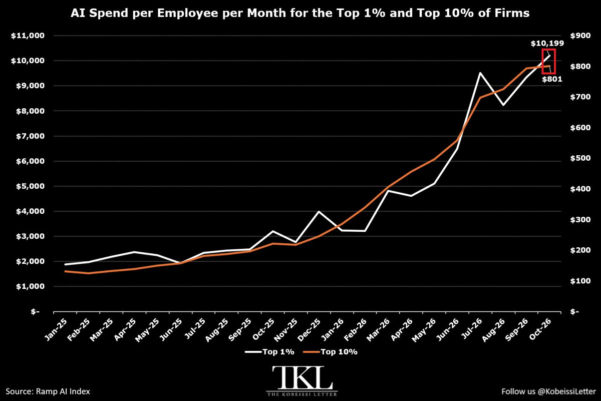
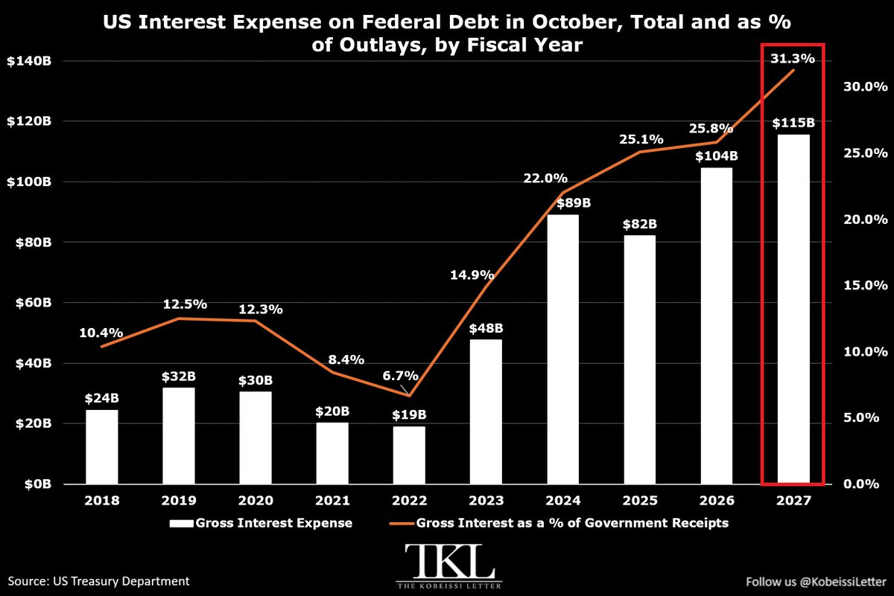

Nvidia senza Huang, 10.199 dollari di AI a testa e la finestra (chiusa) di Fleming
Brief di martedì 17 novembre 2026 · lista X «Best» · 235 post da 47 account, dalle 08:00 del 16/11 alle 07:09 del 17/11 (ora di Roma)
👑 C'è una fiaba di Andersen in cui serve un bambino per dire che il re non ha vestiti. Ieri, a Wall Street, il bambino è stato il board di Nvidia. E il regno, senza il suo re, vale quasi 2.000 miliardi di dollari in meno.
Ricapitoliamo. Jensen Huang ha lasciato Nvidia, accusato di legami con una presunta spia cinese. Ieri pomeriggio Trump ha detto che «non sappiamo» se Huang fosse coinvolto e che «non gli dispiacerebbe» vederlo tornare CEO, perché avrebbe «imparato la lezione». Poi ha aggiunto che potrebbe parlarne con Xi, e il titolo è tornato in positivo.
Però, però, però. Tre ore dopo è arrivata la doccia fredda: secondo CNBC il board non sta valutando il ritorno di Huang. Nvidia è scesa ai minimi di giornata, −34% dal massimo del 6 ottobre, e si è portata dietro tutto il Nasdaq 100, a −2,3% in giornata. Il conto, dal picco: quasi 2.000 miliardi di capitalizzazione bruciati.
x.com/KobeissiLetter/status/2122384301102694599
Intanto, la storia della spia scricchiola. Nella notte Commercio e Giustizia hanno pubblicato una dichiarazione congiunta sul caso Megaspeed, in cui si legge che Nvidia aveva già messo Megaspeed nella lista «no sell» a giugno 2025. Più di un anno fa. E, come nota @cryptopunk7213, senza una riga di prove sulla spia né su cosa sapesse Huang. Nel frattempo il Commercio ha chiuso anche la scappatoia del cloud: nuove restrizioni sull'accesso remoto ai chip AI americani.

Quindi? Il problema vero lo mette a fuoco Tyler Cowen su The Free Press: l'azienda non era costruita per sopravvivere alla sua uscita, con troppo potere e troppa conoscenza in una sola testa (circa 60 persone a riporto diretto). «Senza Huang, probabilmente non ci sarebbe stata Nvidia». Ma senza Huang, ci sarà ancora? I conti escono proprio oggi. Ai posteri (e agli analisti) l'ardua sentenza.

Mentre il re dei chip vacilla, chi i chip li usa non frena. Anzi. Secondo i dati Ramp, a ottobre l'1% delle aziende americane che spende di più in AI ha messo 10.199 dollari per dipendente, più del triplo di gennaio. L'azienda mediana? 16 dollari. Uno scarto di 625 volte. E le imprese che usano l'AI sono salite al 56,8%, dal 45,5% di gennaio.

Eppure, a sentire due economisti, quei soldi non diventeranno subito crescita. Nella puntata di a16z con Erik Torenberg, Tyler Cowen e Alex Imas (Google DeepMind) spiegano che modelli più intelligenti non scavalcano da soli i colli di bottiglia, e che gli agenti non sanno ancora coordinarsi tra loro. In più, la guerra dei prezzi tra laboratori può tenere piatti i ricavi anche con i token alle stelle. E il PIL, dicono, sottostimerà i benefici, perché tanto di quello che l'AI ci dà è gratis.
Un indizio, da Peter Diamandis: secondo OpenAI ChatGPT gestisce già circa il 20% delle ricerche di Google. Cowen aggiunge che l'AI, per ora, rende più difficile assumere: come capisci se un candidato sarà bravo con l'AI? Il voto di laurea non lo dice. Insomma, budget o PIL: chi ha ragione?
Allarghiamo lo zoom. Il 2026 è l'anno del value: il Russell 1000 Value batte il Growth di 27,7 punti, +24,8% contro −2,9% da inizio anno, il distacco più ampio dal 2000. Ma sotto la superficie il 65% del Russell 3000 è in bear market, e il 40% ha perso più del 30%. E l'euro è scivolato per un attimo sotto 1,10 dollari (1,0998), al minimo da 19 mesi.
Vi ricordate Niall Ferguson e le grandi potenze che spendono più in debito che in difesa (🏯 ff.125.1 Cicli imperiali)? A ottobre gli USA hanno pagato 115 miliardi di dollari di interessi, il 31,3% di tutta la spesa federale del mese, record, con una quota più che quadruplicata in quattro anni. Sul fronte famiglie, i prestiti studenteschi gravemente insoluti sono al 10,9%, il dato più alto dal 2019.

Dai soldi al potere. Paul Christiano, quello che ha inventato l'RLHF in OpenAI e oggi guida l'Alignment Research Center, dà una probabilità su tre a una superintelligenza capace di rovesciare un governo entro un anno, se si continua a questo ritmo. La sua proposta: fermare il progresso algoritmico finché i laboratori non sanno proteggere pesi e segreti, altrimenti la Cina potrebbe semplicemente rubarla a metà dell'esplosione. E nessun approccio attuale, dice, ha più del 50% di probabilità di tenerla sotto controllo.
x.com/dwarkesh_sp/status/2122391850854088858
Bill Gurley, nel frattempo, regala una parola nuova: handoverism, l'idea che l'umanità debba (o comunque finirà per) passare il controllo all'AI. E cita Tom Brown, cofondatore di Anthropic: «Ci sarà un passaggio di consegne in cui l'umanità cederà il controllo all'AI trasformativa». Dall'altra parte, Diamandis chiede di calcolare, accanto a p(doom), anche p(fab): la probabilità che l'AI curi il cancro e l'Alzheimer. Ne parlavamo già in 🐒 ff.36.1 Esempi di superintelligenza? Oggi c'è chi dà le quote.
A proposito di controllo. Ieri sera United Airlines ha avuto un «guasto diffuso dei sistemi» che ha tenuto a terra i voli, a pochi giorni dal blocco FAA. Ethan Mollick ricorda che buona parte dell'infrastruttura informatica è un sistema improvvisato, soggetto a guasti a cascata: non servivano attacchi AI per avere i blackout di Microsoft e FAA. Però le due cose sono vere insieme: l'ambiente cyber è un incubo, e ogni guasto viene raccontato come «quello grosso».
Tutti conosciamo la storia: Fleming lascia la finestra aperta, una muffa entra nella piastra e nasce la penicillina. Bella. Probabilmente falsa. Nella sua prima colonna per Works in Progress, Saloni Dattani racconta che i colleghi testimoniarono che quella finestra non si apriva quasi mai, e che la sequenza non è mai stata replicata come lui la descrisse: la penicillina blocca i batteri mentre costruiscono la parete cellulare, quindi doveva essere sulla piastra prima che crescessero.
Non è l'unico caso. Il vaccino contro il colera dei polli di Pasteur, il secondo vaccino della storia, fu frutto di esperimenti deliberati del suo assistente Émile Roux, mentre Pasteur era al matrimonio della figlia. E Röntgen fece bruciare i suoi appunti dopo la morte. Il biografo mancato di Fleming, Ronald Hare, tentò decine di volte di replicare la piastra. Perché raccontiamo il caso al posto della fatica?
Chiudiamo con una domanda che arriva puntuale dopo ogni lungo: integratori sì o no? Rhonda Patrick risponde così: prima verdure a foglia, noci, semi e legumi; se la dieta non basta, citrato, glicinato o cloruro (citrato e cloruro si assorbono meglio dell'ossido). Lei prende glicinato un paio d'ore prima di dormire, pur ammettendo che non è provato sia la forma migliore per il sonno. Ne parla a lungo nell'ultima puntata di Aliquot. Ne avevamo già parlato con l'💊 ff.104.1 L'hacker del corpo. Prima la forchetta, poi la pastiglia.